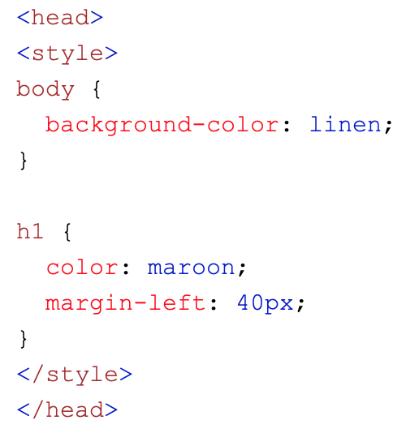
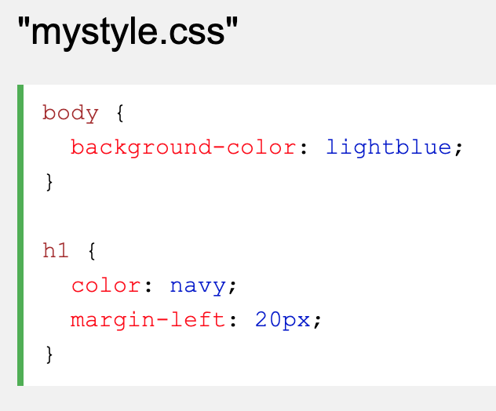
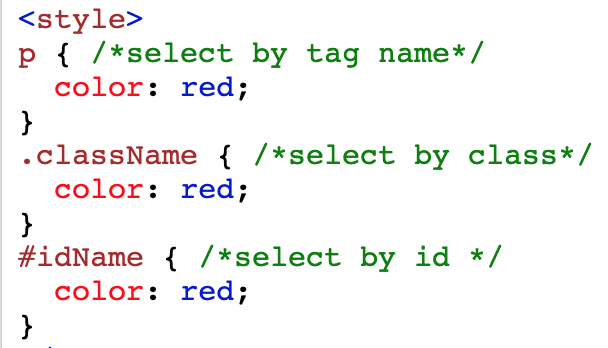
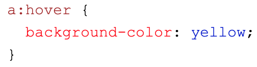
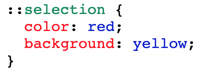
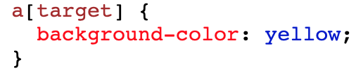
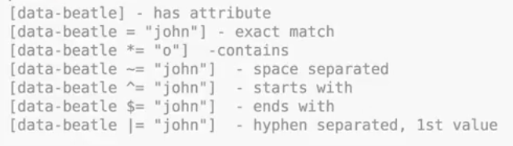
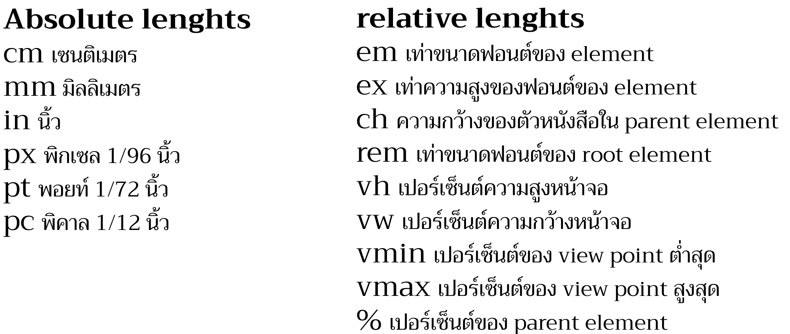

For example CSS Syntax

h1 {color:blue}
h1 is selector
{color:blue} is declaration
| CSS Syntax | CSS Writting | Selector | Combinator |
|---|---|---|---|
|
|
|
|
h1 {color:blue}
h1 is selector
{color:blue} is declaration
1.Inline CSS : put CSS in tag.
2.Internal CSS : put CSS in the same file with html. usally we put in head.
3.External CSS : Create file CSS and when you want to use it just import that file to html.
1. Simple selectors (select elements based on name, id, class)
2. Combinator selectors (select elements based on a specific relationship between them)
An example is below next topic.3. Pseudo-class selectors (select elements based on a certain state)
4. Pseudo-elements selectors (select and style a part of an element)
5. Attribute selectors (select elements based on an attribute or attribute value)
This mean select the tag a that has attrubute name target.
| Property | Value | Unit | Differention |
|---|---|---|---|
| เปรียบเทียบ Element คือ คน property คือ ชิ้นส่วนหรืออวัยวะของคน | value คือ บอกลักษณะหรือขนาดของชิ้นส่วนหรืออวัยะวะของ element | unit เป็นตัวบงบอก ขนาดของ value อีกที่ โดยมีหลายแบบ เช่น px,em,% เป็นต้น | ทั้งสามอย่างมีหน้าที่ที่ตายตัวอยู่แล้วเพราะฉะนั้นจึงแตกต่างกันโดยสิ้นเชิง เราไม่สามารถ เอา value ไปใส่ แทนที่ property และเอา unit มาใส่แทนที่ value ได้ ทั้งสามส่วนทำงานด้วยกัน ex. {width:15px}width คือ property 15 คือ value และ px คือ unit |
Property มี ทั้งหมด ดังนี้
Unit มี ทั้งหมด ดังนี้
| Value in Display Property | Grid VS Flex | Justify VS Align | Position | Z-index |
|---|---|---|---|---|
|
Flex ใช้ในการจัดรูปแบบแกน X แกนเดียวได้ง่าย ส่วน Grid ใช้ในการจัดการ แกน X และ Y ของ content | Justify ใช้จัดการแนวนอน Align ใช้การแนวตั้ง | เป็นการย้าย content หรือ item ที่ต้องการไปอยู่ในส่วนต่างๆของหน้าเว็บ hightlight sticky(เมนูข้างบนเลื่อนตามเสมอ) ! | เป็นการจัด content หรือ item ใน มิติที่ สาม นั้นก็คือ การจะย้ายไปข้างหน้า หรือย้ายไปข้างหลัง |